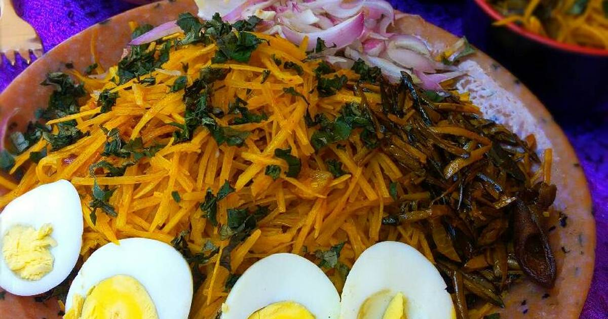

AFRICA SALAD RECIPE

Ingridents
- 3 handfuls abacha
- 2 cups ugba(ukpaka)
- 30 cl red palm oil
- 2 Tablespoons Powdered Potash (food tenderizer)
- Fish|Mackerel/Dry Fish/Stochfish
- 1 large Onion
- Salt and dry pepper (to taste)
- 4 tablespoons ground crayfish
- 2 stock cubes (Maggi/Knorr)
- 1 teaspoon ground Ehu seeds (Calabash Nutmeg)
Other seasoning you can add to the Abacha